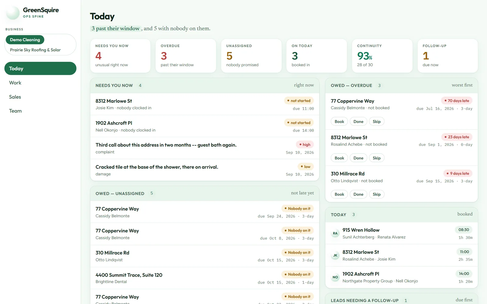
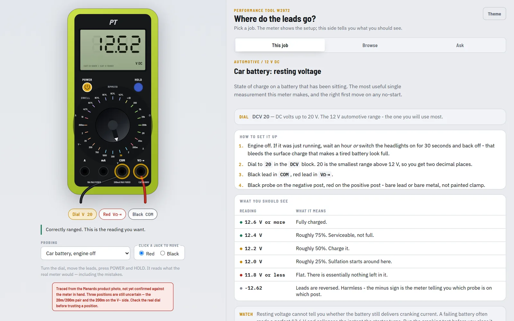

I build the tool I wish already existed.
Hi, I'm Tim. By day I'm a senior data analyst, integration specialist, and AI engineer. On nights and weekends I build small, very specific software for real problems. There's a garden that knows where the sun lands, a lightning clock for a kids' soccer club, and a system that runs a cleaning business.
All of it happened in under five months. It started this spring with one big build: my own AI operating system, a personal setup that researches, plans and builds alongside me. Everything else here grew out of that. This notebook shows what the tools look like and explains how they work without the jargon. The jargon is still there, one tap away, if you want it.
Every screen in here is real. Tap any picture to zoom in.


A yard that knows where the sun lands
Garden Helper runs our garden: every bed and plant on one screen, a harvest log, and a sun map built from government laser scans and sun math to the minute.

The system that runs a cleaning company
Customers, crews, schedules, photos, payroll. One app, any number of businesses.

Heat & lightning for game day
Satellite lightning and the league's own rules, in a parent's pocket.

Measuring with a phone scan
A walnut slab scanned in 3D, with guitar bodies laid on top at true scale.

A 22-page music theory hub
Chords, capos, and the Circle of Fifths, plus an album plan.

The D&D table
361 spells and 427 monsters, pulled out of the rulebooks.

A multimeter you can't break
Turn the dial, move the leads, and see what the real meter would say.

More from the bench
Trade calculators, a camper battery copilot, a draft-day engine, and more.
How I build
A research agent, overnight work shifts, and a server at my house.
Got a problem like these?
The kinds of things I could build with you.
From an empty repo to all of this.
I've worked with data for years, but building software with AI is new this year. The first big build was my own AI operating system, seeded from a starter kit repo, and everything in this notebook grew out of it on evenings and weekends.
1,775 saved changes and counting.
- The AI operating system begins. First commit, seeded from a starter kit repo and rebuilt into my own system since, with Claude as the build partner.
- Roland and the first garden app. A research agent, and a place to log the tomatoes.
- Overnight shifts begin. Research runs while I sleep, with a brief waiting in the morning.
- The sun model draws its first shadows. Government laser scans meet the backyard.
- The D&D codex. Pulling hundreds of spells and monsters out of PDFs.
- A walnut slab, scanned. Ten guitars tried on before a single cut.
- Trade calculators. The first apps built to sell.
- Heat check for a soccer club. Satellite lightning followed on 10 Sep.
- The business system begins. Billing and payroll were running by 17 Sep.
- This notebook. Last refreshed 24 September 2026.
Look familiar?
If one of these looked like a problem you deal with every Tuesday, I'd love to hear about it. Start with the kinds of things I could build with you, or just flip through the notebook. The Contents button at the top jumps anywhere.
Drop me a line. I read every one.